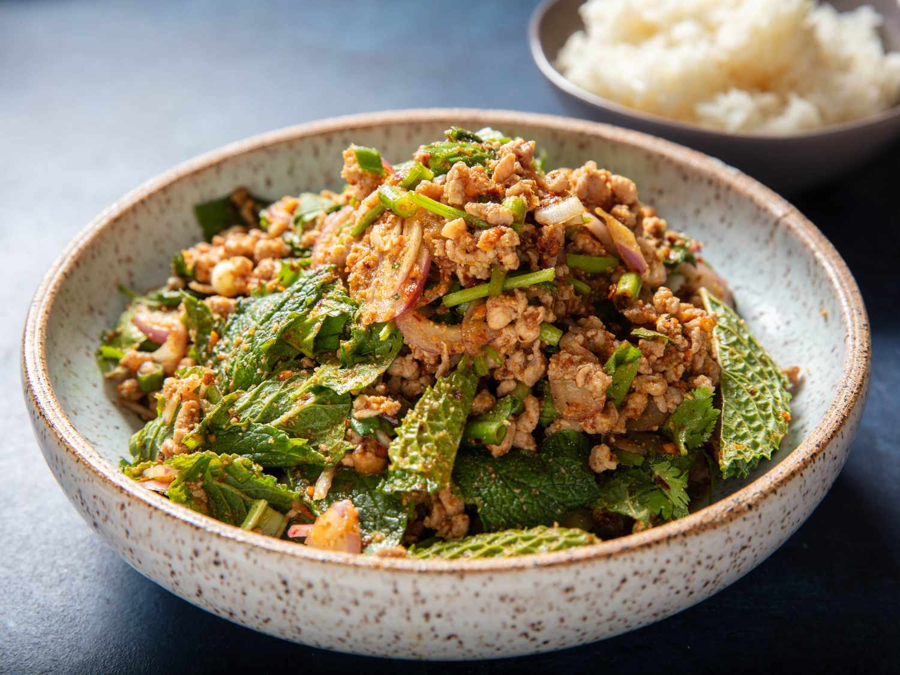

Larb Moo

Description
Larb Moo, a classic Thai dish, is a flavorful pork salad that combines minced pork with fresh herbs, lime juice, fish sauce, and roasted rice powder. Often enjoyed with sticky rice or fresh vegetables, it's known for its tangy, spicy, and savory profile. This dish is a staple in Thai cuisine, offering a perfect balance of taste and texture.
Ingredients
- Ground Pork
- Lime Juice
- Fish Sauce
- Shallots
- Fresh Thai Chilies
- Roasted Rice Powder
- Fresh Mint Leaves
- Fresh Cilantro
- Green Onions
- Lettuce Leaves
Steps
- Cook Ground Pork: Heat a skillet over medium-high heat. Add the ground pork and cook, breaking it apart with a spatula, until fully browned and cooked through.
- Prepare Rice Powder: In a separate dry skillet, toast uncooked jasmine rice grains until golden brown. Grind the toasted rice in a spice grinder or mortar and pestle until it becomes a coarse powder.
- Mix Ingredients: In a bowl, combine the cooked ground pork, lime juice, fish sauce, finely chopped shallots, chopped fresh Thai chilies (adjust amount to your spice preference), and a portion of the roasted rice powder.
- Add Fresh Herbs: Mix in fresh chopped mint leaves and cilantro.
- Adjust Seasoning: Taste and adjust the flavors by adding more lime juice, fish sauce, or roasted rice powder as needed. The dish should have a balanced blend of salty, sour, spicy, and nutty flavors.